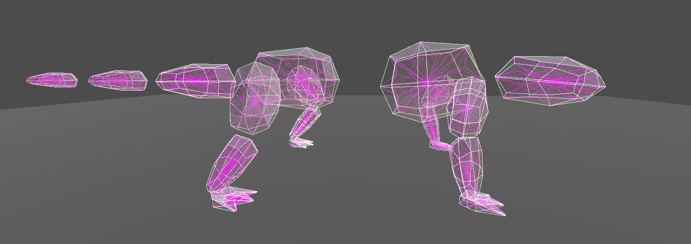
Procedural Animations with SoftBody Physics in Godot
Overview
This paper explores the possibilities of procedurally generated animations that are adaptive to user
input and environments in combination with deformable meshes, simulated through SoftBody physics.
Due to a focus on applications in the indie game scene, the goals of this paper are not to find the
most realistically accurate solutions, but rather to achieve a blend between performance lightening
optimizations and visually pleasing stylization, all while relying exclusively on freely available,
open-source tools, like the Godot game engine and the 3D modeling and animating software Blender.
The results are a character mesh, which has been separated into distinct main body sections, to allow
for faster and more stable physics simulation created by a custom written SoftBody physics class,
based on the Mass-Spring-Model. Additionally, the mesh has been internally subdivided to allow for
secure attachments to a procedurally animated character rig, without interfering with the soft
physics of the outer mesh surface.
This page only presents a summarized overview of my work, but the entire thesis can be read
here.
Technical Aspects
The two big topics I aimed to combine in my thesis were SoftBody Simulation and Procedural Animation. However, since I restricted myself to only use open-source tools, these two aspects lacked compatibility. Hence, I created custom alternatives to the tools Godot offered.
Procedural Animation
I started out with creating a simplified 2D prototype of a procedurally walking 4-legged character.
The only manual input this character was supposed to react to was a general walking direction,
at first provided by a simple target location, communicated via a mouse click on any point on the
screen, and later replaced with more flexible WASD inputs, that control for-/backwards movement as
well as rotation.
With the movement of the main body controllable, the limbs then automatically react accordingly,
by making sure each foot always stays in a natural range and angle from the body, resulting in the
alternating movement of each foot.
Since Godot did not include any IK chain tools for 2D nor (at the time I began working on this thesis)
3D, I had to implement one myself as well, to allow the body and feet to be connected by legs. While
there are multiple iteration-based IK solutions, my case only required simplified 2-bone-IKs, which
I achieved with a geometry-based approach instead.
The 2D step logic was later adapted into 3-dimensions, by expanding them with sine-curve-based foot-lift,
and a hip-tilt algorithm function, driven by the foot placement.
SoftBody Simulation
The decision to create a fully custom SoftBody class was made due to Godot's SoftBody physics being
unsuited for combination with animation in multiple ways: firstly,
the interface for pinning vertices of the mesh to a rig or other control objects is unnecessarily tedious
and redundant, since it requires each mesh vertex to be configured individually, with no option to
import that data from another program, making this tool functionally unusable for even slight higher
resolution meshes. Secondly, it only allows for full pinning of outer vertices to individual objects,
resulting in harsh deformation of the surface. My goal however was to achieve a movement that imitates
the behaviour of real bodies, where the movement is driven from the bones within, which indirectly
pull along the soft tissue around them.
To create my custom SoftBodies, I internally subdivided the mesh, which created internal support
springs that help preserve the object's volume, as well as internal access points that could then
be pinned to the animation rig.
Additionally, as a way to improve the performance of simulating complex, concave character meshes, I
developed a concept that separates the full mesh into smaller, simplified body sections, based on the
main bone areas of the rig, and only simulate these proxy-objects. The original mesh surface can then
be laid over these objects again, and contrasts to follow their deformations, driven by both
animations and physics.
Gallery
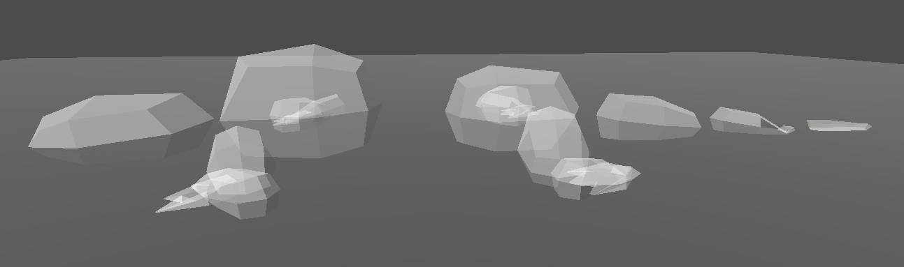
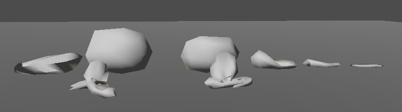
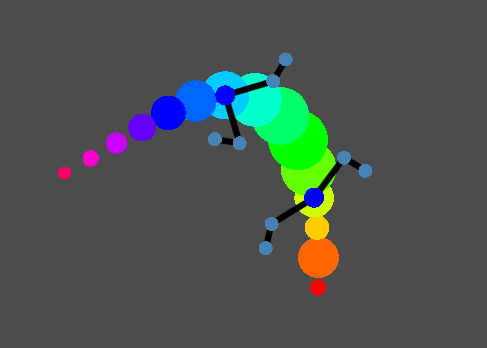 |
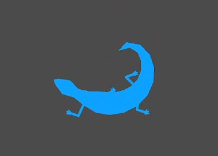 |
watch video
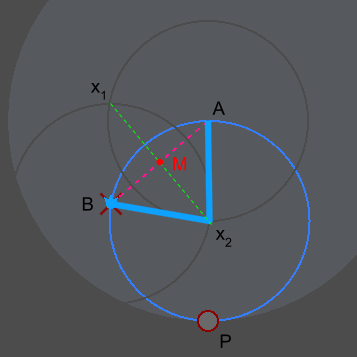 |
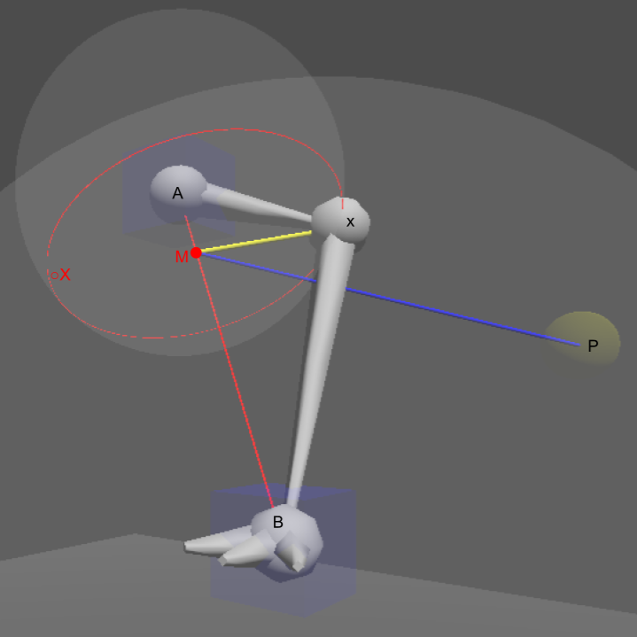 |
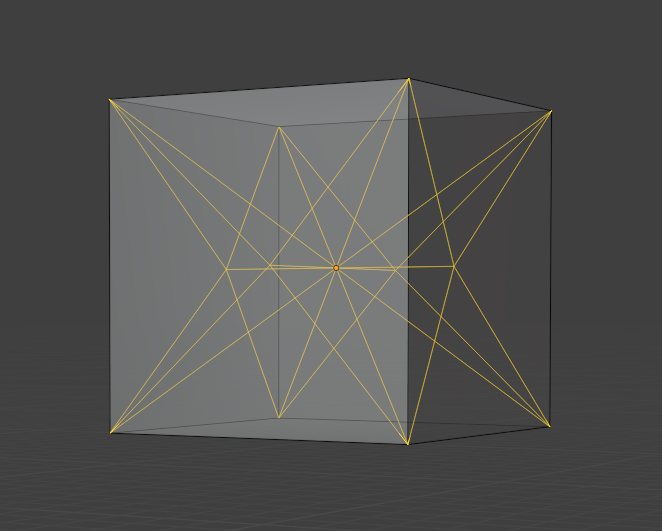 internal subdivision for a Cube |
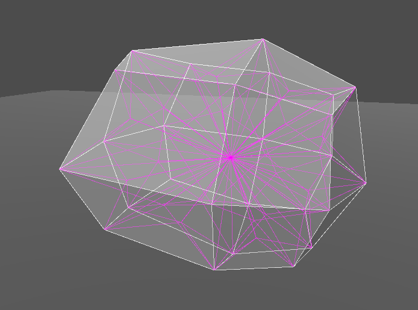 internal subdivision for a low-poly sphere |
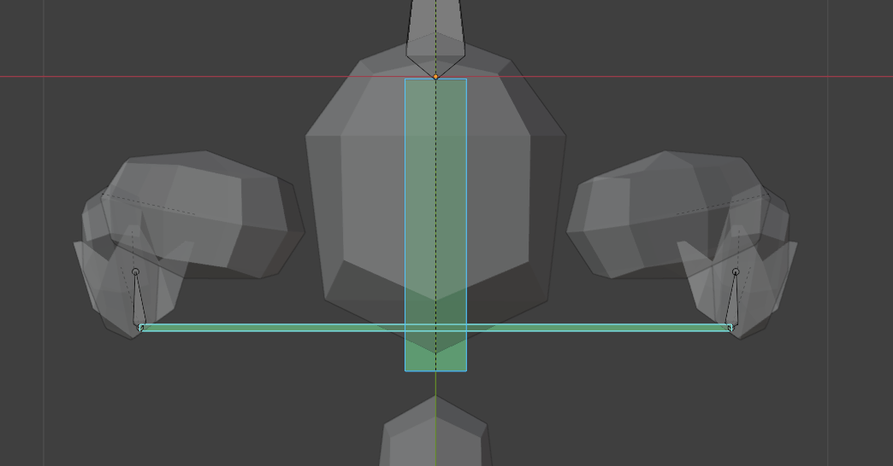 |
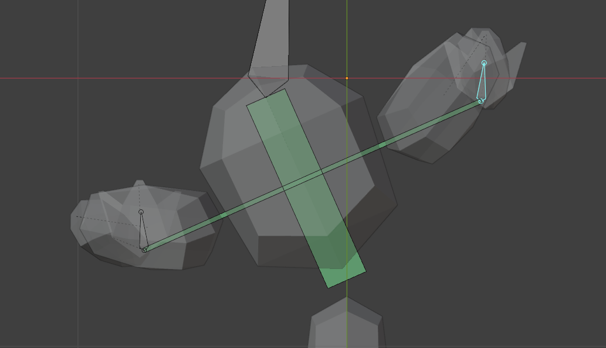 |
watch video
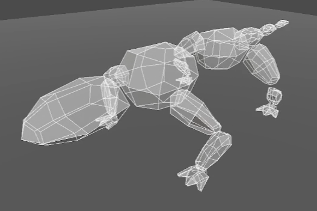 exaggerated jiggle demo of custom SoftBody watch video |
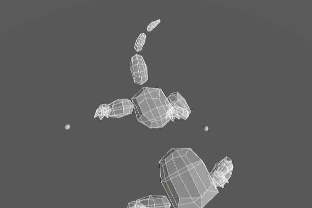 procedural tail movement demo watch video |